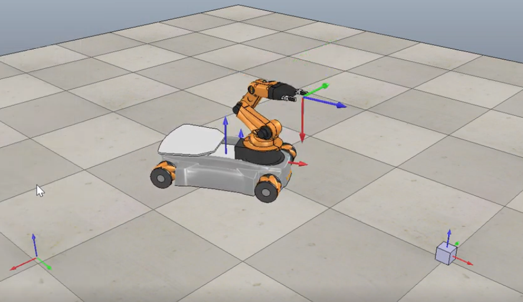
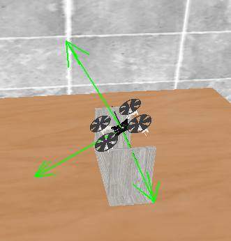
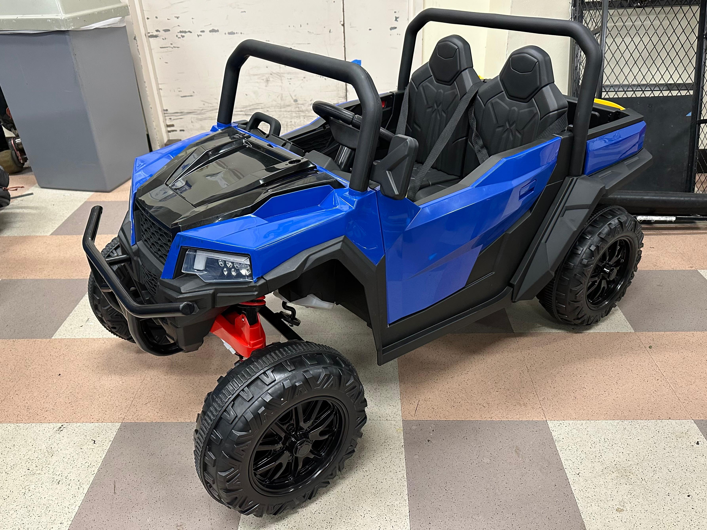
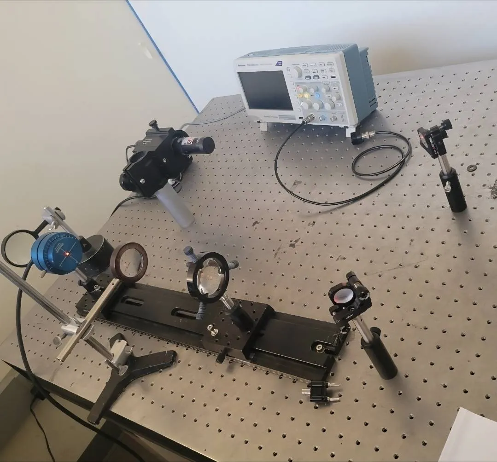

Portfolio
Selected technical projects.
These projects span robotics, controls, experimentation, optics, and autonomous systems.

youBot Mobile Manipulation Control
I developed a control and simulation pipeline for the youBot to autonomously pick up a cube and move it to a target pose using coordinated chassis-and-arm motion.
The project separated the task into state prediction, trajectory generation, and feedback control. I used ScrewTrajectory from the Modern Robotics MATLAB library to generate smooth eight-segment reference motion, then implemented a feedforward plus feedback controller that combined proportional and integral error correction to track the desired end-effector path.
To convert commanded end-effector twists into robot motion, I used the pseudoinverse of the mobile manipulator Jacobian to distribute responsibility across the four Mecanum wheels and five arm joints. I also enforced actuator velocity limits in the simulation through first-order Euler integration and command saturation so the system behaved more like a physically realizable robot instead of an unconstrained mathematical model.
I evaluated best-case, overshoot, and new-task scenarios, compared tracking behavior through Xerr plots, and analyzed how controller gains, singularity proximity, and joint speed limits affected performance. The linked video shows the best-case execution of the task.

Flight Controls and State Estimation
We built a quadrotor controls stack from the ground up, progressing from direct motor commands and IMU inspection into actuator calibration, complementary-filter attitude estimation, control allocation, and stable hover logic.
The linked page turns that work into one long-form technical project story, including the underlying control and estimation theory, representative plots, and the embedded code and MATLAB analysis used to validate the system.

UR3e Inverse Kinematics and Task Planning
I programmed a UR3e robot arm to autonomously assemble a multi-part figure by solving inverse kinematics for every waypoint in the task sequence. The IK solver used the iterative Newton's method approach on the space Jacobian, rather than a closed-form solution, with screw axes and SE(3) coordinate transforms defining the robot's geometry.
Waypoints were defined as full SE(3) target poses with gripper state, and intermediate staging waypoints at a fixed Z height were introduced to guarantee collision-free transitions between pick and place locations. Every waypoint converged within 20 iterations, and the full sequence was uploaded to the physical robot via a Python script and executed successfully.

RoboJeep
RoboJeep was a UCSD MAE 148 final project focused on converting a prebuilt children's ride-on vehicle into a reusable ROS 2 electromechanical platform for future controls and autonomy projects.
I also constructed and launched a Dockerized ROS 2 workspace, integrated serial bridges to the Arduino controllers for real-time vehicle control and debugging, and supported closed-loop steering, skid-steer operation, and low-level drive command execution.
On the sensing and validation side, I procured and integrated AS5600 magnetic encoders across all four drive motors, characterized encoder performance up to 9,600 RPM, and validated behavior by confirming the expected linear relationship between applied voltage and angular speed. I also helped incorporate a hardware fail-safe E-stop that disables the 5V enable signal to every motor driver for safer operation.

Controls Coursework
- Designed and deployed a full state feedback controller for a physical inverted pendulum using pole placement
- Derived linearized cart-pendulum dynamics from Newton's laws and built a complete state-space model
- Designed a Luenberger observer to estimate cart velocity and pendulum angular rate without numerical differentiation
- Compared observer-based and differentiation-based controllers on hardware, showing the observer significantly reduced noise amplification in the velocity feedback path

Laser Systems
I worked hands-on with solid-state laser systems, using a laser pump, HR and OC optics, and precision alignment methods to create and optimize a high-power laser resonant cavity.
I aligned beams through an X-Y mirror setup, measured polarization ratios using polarizers and optical detectors, and performed beam profiling to evaluate diameter, divergence, and beam quality. I also operated Shimadzu spectrometers and oscilloscopes to capture spectral behavior, transmission properties, and pulse-related measurements across the optical setup.
Beyond running the experiments, I documented factory-style test procedures for crystal spectrum scans, mirror spectrographs, resonant cavity alignment, power optimization, and beam collimation. That work required careful optical alignment, wavelength-based analysis of crystals and mirrors, and repeated adjustment of the HR and OC mirrors to maximize output power while maintaining safe lab operation.

Instron Mechanical Testing of 3D-Printed Bone Structures
We used an Instron testing machine to characterize the tensile and compressive properties of 3D-printed porous PLA specimens across two infill geometries, gyroid and 3D cross, at 25% and 35% infill density, extracting elastic moduli from stress-strain curves generated in MATLAB.
Beyond mechanical testing, we designed a gravity-fed water flow experiment to rank the permeability of each geometry, measuring the time for 80% of a 100 mL column to pass through each specimen. The gyroid outperformed the 3D cross in every category: higher tensile modulus, higher compressive modulus, and substantially faster fluid flow, with the permeability advantage reaching nearly 6x at equivalent density.

Mini Autonomous Car
Integrated an OAK-D Lite camera and GNSS receiver into a perception pipeline using YOLOv8 models and PID position control.